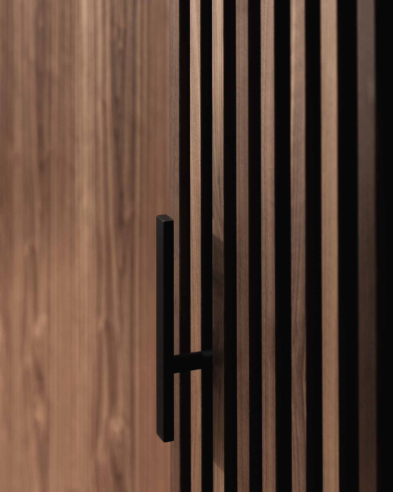

About · Company
BCIT for joinery. A decade on the bench at Wilms Millwork. The Government Street shop opened in 2002 with three people and a long-radius bending form for a single curved alder rotunda — the curve held, the shop grew around the bench. Today the floor runs twenty craftspeople, all in-house, all employees: journeymen, finishers, installers. Concept to completion under one roof, twenty-five years on the same address. AWMAC BC Gold in 2011 with Lamoureux Architects. AWMAC 2027 submission currently on the bench — Old Gravel Road, Whistler, forty-three sheets of rift-and-smoked-oak millwork.




Site walks at the shop by appointment — Friday afternoons usually work best. Bring drawings, bring questions; we'll show you the press, the spray booth, and the project on it.
Get in Touch